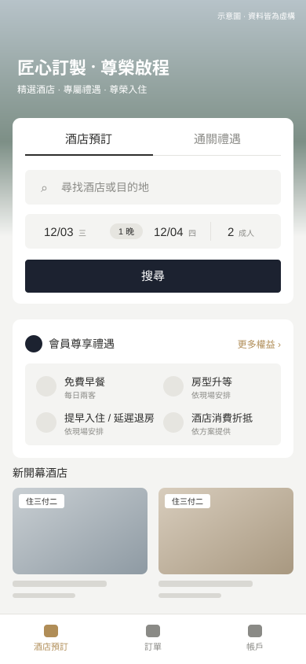
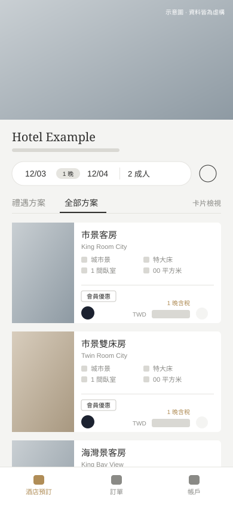

同一套後端，三個前台各有各的限制
WOTA 的客人可以從官網、LINE LIFF 或合作夥伴的白牌網站訂房。三個前台共用同一個後端與資料庫，但各自有不同的使用情境與技術限制。
只要任何一邊的流程、文案或規則對不上，客人就會在不同入口看到不同說法，客服也要花時間解釋。
讓客人不論從哪個入口進來，都能用一致的流程完成搜尋、訂房與會員操作，並且支援繁中、簡中、英文、日文 4 種語系。
涉及範圍
酒店搜尋與預訂、會員與帳號、訂單與付款、多語系、通知訊息等模組。2024 年 7 月到 2026 年 8 月間，團隊累計近 500 項開發任務，我參與其中大部分的設計、規格與前端協作。
三個關鍵決策
先盤點兩邊所有中英文字串，逐一比對、標出一致、有差異、無法配對三種狀態，再系統化修正。這樣客人在兩個入口看到的是同一套說法。
重設密碼仍走 email，避免把帳號安全相關的訊息推到聊天室。這個範圍需要在 PRD、QA 與通知清單中同步更新，避免誤刪 LIFF 內的流程。
在訂單完成頁與入住提醒信加上「加入 LINE，隨時查看訂單」的引導，並與行銷、銷售團隊協同素材與追蹤方式。
把高端品牌感帶進手機上的訂房流程
LIFF 是在 LINE 裡打開的網頁，畫面更窄、操作更依賴大拇指。設計上延續官網的黑金高端調性，同時把卡片、日期人數列、房型卡片做成可重複使用的元件。


涵蓋的流程
註冊、登入與忘記密碼、酒店搜尋與詳情、房型與方案、訂單詳情與狀態、酒店收藏、Rich Menu 入口與 Flex Message 通知。
可及性與數據
依 WCAG 檢查對比度與可讀性，並參考 A/B 測試與 Heatmap 的觀察結果調整訂房流程的步驟與資訊排序。
和工程一起把關，從開發環境走到上線
| 階段 | AI 負責 | 我負責 |
|---|---|---|
| 規格 | 整理跨平台需求、比對官網與 LIFF 文件差異 | 決定哪些流程要一致、哪些保留平台差異 |
| 文案 | 產出 774 個 i18n key 的比對表與建議對照 | 判斷差異是否合理、決定最終用語 |
| 驗收 | 整理測試案例與 Slack 回報的問題 | 實際操作驗收、判斷優先順序與是否上線 |
各階段 AI 與人的實際分工待本人確認
我與前端工程師一起確認元件的模組化程度，並推動測試流程從只停在開發環境，改成 dev → staging → UAT → 正式環境的驗收節點。
正式環境出現真實客人的資料後，才發現護照英文姓名的格式問題。之後測試改成補上中文姓名、英文護照名等真實資料型案例，而不是隨意填寫的測試資料。
多語系文案比對
比對表依中文、英文、語意、key 的順序判斷，並標出每個 key 所屬的頁面與模組，讓修正可以分批進行。
放一組真實的前後對照，證明 AI 產出經過人的判斷與修正。素材需去識別化。
LIFF 訂房上線，三個前台用同一套說法
LINE LIFF 訂房平台在 2026 年 5 月完成開發，接著進入導流階段。官網、LIFF 與白牌的文案開始以同一套標準整理。
還沒完成的
209 個無法配對的文案 key 仍需逐一判斷；LIFF 元件庫的完整盤點也還在進行中。
可量化的成效
導流成效、訂房轉換等數據待補或不寫
如果重來一次
反思內容待本人補充